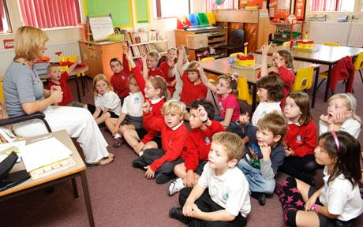
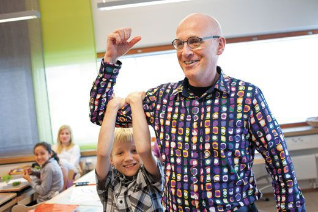
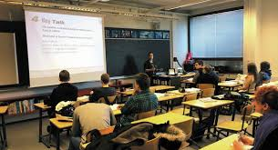

Q: How are Finnish primary schools funded?
A: National funding based on number of students, additional funding if they have more immigrants or underserved students
By Emilia Borisova, Kori Lu, Edward Tan, Rafael Bayer, Reinard Fegamas
Across Scandinavia, primary school looks very different than it does in the rest of the world. While no two countries are exactly the same, throughout Scandinavia we see a greater focus on experience-based holistic learning, with a large emphasis on ensuring each child can develop, and have their needs met. One fantastic example of such a difference, is the prevalence of Danish Forest Kindergartens, in which students spend the vast majority of their day outside, with freedom to explore and learn at their own pace. According to Jane Williams-Siegfredsen, a Forest Kindergarten pedagogue from Denmark, this system results in "…a more child-centred approach to learning and development evolved, leading to more humanistic beliefs around childcare and education." In addition to teaching more holistic and humanistic beliefs, Anu Partanen tells us that Scandinavian primary education as a focus on actual learning and development of skills, rather than just being a setup stage for high school and higher education. Absence of standardized tests and grading move the focus away from strict curriculums towards a more inclusive and effective system where students can be taught and learn based on their individual needs.
Beyond just the students, Scandinavian educational systems are notably different in terms of the quality of instructors and the funding received by schools. “While U.S. public schools are locally funded, usually from property taxes, and rewarded based on high performance through programs such as the U.S. Department of Education's Race to the Top grants, Finnish schools are nationally funded based on the number of students. Schools are provided additional funding if they have a higher proportion of immigrants or students whose parents are uneducated or unemployed…" (Stanford Report January 2012). This equitable funding system ensures that students of all social classes receive quality education, and parents are not forced to make the choice between quality education for their children and financial stability. This funding system also shows itself in the quality of teachers that can be hired, “ 'Teachers in Finland are required to obtain a three-year master's degree, state-funded, before teaching. These education positions are highly coveted, Sahlberg said. For example, only one in 10 primary-school teacher applicants are accepted.' " (Stanford Report January 2012).
Middle school in Scandinavian nations is very similar to primary school. There aren’t many differences other than the addition of a grading system, which is mainly used for applying to high schools. Students receive a letter grade for their courses, which are then converted to a numerical score for the application. Core subjects, such as English, Math, and a Scandinavian language depending on the country, must pass in order to attend high school (Skolverket 2009). Otherwise, the student enters a high school introductory program. The goal of the program is to either reinforce fundamentals so students can attend high school or to forgo high school altogether and enter the workforce instead.
One big difference between Finnish schools and US schools is the amount of students receiving some kind of special help. Nearly 30% of students in Finland are in Special Ed programs compared to 14% in the US (nces.ed.gov 2020). Finnish schools also boast a small classroom size, where the US has a pupil-to-teacher ratio that is 54% higher than Finland (Nation Master 2020). A combination of small class sizes where teachers in many schools know every student combined with a "whatever it takes" attitude may be the secret behind the Scandinavian education success stories (Smithsonian Magazine).
High school is more rigorous than the decade of compulsory schooling that precedes it. In particular, students are required to take a National Matriculation Exam in order to graduate as well as to qualify for university entrance. The exam itself is less comparable to the SAT and ACT in the US, and more comparable to the university entrance exams in Asian countries (though Scandinavian universities may still require their own admissions tests). While the SAT can be taken multiple times and only takes a few hours, the National Matriculation Exam is a very long exam taken over the course of weeks, although students can choose to take it in parts instead, since the test is offered bi-annually. Interestingly, once over the age of 16, students can opt in to receive a monthly stipend for being in school. The stipend is worth around $570 USD (Stemmit 2017). Though not a very significant income, it is very sizable in the eyes of a high school student.
While students do spend weeks taking the National Matriculation Exam, there no other standardized tests in Finland. The educators believe that teachers will not need to be held accountable if they feel responsible for their students. "The Finnish education guru Pasi Sahlberg put it this way during his talk at Teachers College: 'In the Finnish language we don’t have the word accountability. It doesn’t exist,' he said. 'In Finland we think that accountability is something that is left when responsibility has been subtracted.' For Sahlberg what matters is that in Finland all teachers and administrators are given prestige, decent pay, and a lot of responsibility. If a teacher is bad, it is the principal’s responsibility to detect the problem and address it" (Stanford Report January 2012).
In Finland, when high school students are ready to apply for university-level education, they are often faced with two choices – either to go to a University or to a University of Applied Sciences (UAS). There are two main differences between the two. The former is more research oriented and focused on teaching theory, while the later is more practical and professionally oriented. While both often do offer many of the same majors, there are certain exceptions (Study In Finland 2020). For example, to become a doctor, one must attend a University, and if one wants to become a nurse, then they must attend a UAS. Although the University is more academic and research oriented, and a UAS is more for those who want to enter a specific profession, this does not mean that one option is better than the other. Both of these types of education adequately prepare students to enter industry and if there is a statistic worth mentioning, then it is that employers tend to prefer those with a master’s degree over those who just have a bachelor’s. On the left, we’ve included a table detailing some of the main differences between the two! (How to apply for bachelor's and master's 2020).
Once admitted and attending college, students do not need to concern themselves with funding. Nordic university students get tuition mostly free of charge and even receive stipends until they graduate. The amount of this stipend is around $600 a month and is enough to pay rent and buy groceries. This not only allows students to indulge in financial freedom without having to worry about student loans after they graduate, but also helps them become autonomous adults in the process. This system strongly encourages independence of every individual and ensures that there is no financial strain on the parents. Part of this stipend, however, is taxable and if students choose to work and earn wages over certain amounts, then the stipend decreases gradually. Even if economic times are tough and there is a necessity for college students to work, then unemployment benefits paired with often decently affordable housing still makes it possible for those attending a university to live a comfortable life (Partanen 2016).
Students in Scandinavian countries are given freedom in their education, and this freedom is not limited to their activities in the classroom, but also their choice in how they want to continue their education. One of the options for students other than upper secondary school is vocational school (Endret 2020). Students who want to learn theoretical subjects can go to upper secondary schools and pursue a path to the university while those who already know what field they want to focus on can enroll in vocational schools (Radday 2016). But even then, those who study at a vocational school do not necessarily limit themselves. After getting their initial vocational certificate, students can directly go to the labor force, choose to gain other vocational certificates, delve further into their field and attain an advanced certificate, or even apply to continue studying in universities (Radday 2016). After vocational schools, their options remain open to choose where they want to focus their life onto. These vocational schools aim to not only tell students about the field that they are learning about, but to produce skilled and employable tradespeople for the society. Students retrieve high-level education of their fields from experienced teachers and then continue their study by going into apprenticeship under established companies (Radday 2016). Although it takes time and resources, companies are willing to invest in these students as possible future forces. After their apprenticeship, students are then assessed on their skills to re-emphasize what they have learned. By going through this experience, students can gain experience in a real work environment of their field.
Where traditional education focuses on having their students perform well on a standardized curriculum, the government-funded folk schools focus on allowing their students to learn by themselves. There are no particular age restrictions and students take classes that they are interested in without being forced to by a certain curriculum (Kurtz 2018). Unlike the common understanding, folk schools exempt their students from the concept of scores. This is done to free the students from the “guidelines” given by the grades. With this freedom, students can experiment and genuinely learn the subjects that they want to without any constraints. Without this idea being implanted in the students’ mind, we remove the hesitation that they have whenever they want to try a new concept/idea, but is afraid of it affecting their grades. By doing this, folk schools hope to achieve ethical and creative growth of their students (Frackman 2019). The students can now think and experiment with their lives however they want, be it in learning and creating music, going outside to ride kayaks, or even picking up a new language. Now that the school’s focus is not creating grades, they can focus on creating a collaborative environment where students grow closer to their peers. Within this environment where adults live and study together, they can mature and understand social interactions along with their fellow students. Being freed from the stress of having to “follow the rubrics”, the students in Folk schools can receive a very specific education tailored to their own learning style and grow with their classmates.
Click on each country!
Hover over each question to see the answer!
Q: How are Finnish primary schools funded?
A: National funding based on number of students, additional funding if they have more immigrants or underserved students
Q: Does one need to apply for a master's degree after completing a bachelor's?
A: Depends. At a university- no. At a UAS- yes!
Q: What accessory do Finnish grandmas wear at high school graduation ceremonies?
A: A special brooch given by the high school grad.
Q: How many times can a student take the National Matriculation Exam?
A: Once before high school graduation but they can take it in multiple parts.
Q: Can you go to University after a Vocational School?
A: Yes! You can also get other certificates or an advanced one!
Q: Do Folk Schools focus on creatively?
A: Yes, by giving the students freedom to learn however and whatever they want!